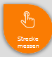
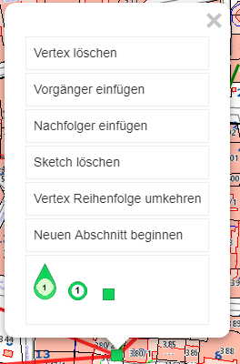
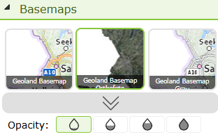
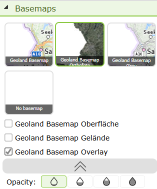

Usability¶
Some functions of the API can be controlled via so-called usability constants. These can be set in custom.js for individual maps or entire portal pages.
ClickBubble¶
The ClickBubble improves the usability of the viewer on touch devices. Tools that require a click on the map (e.g. Identify) are often difficult to use on touchscreens, since a finger tap can be imprecise. When the ClickBubble is enabled, it appears for all tools that require a click interaction:

Instead of clicking directly on the map, the user drags the bubble to the desired location. The tip of the bubble marks the exact point for the action. Releasing the bubble automatically returns it to the top-right corner and performs the desired action (e.g. Identify).
If the user clicks on the bubble (without dragging it), a description of how to use it opens.
Enabling in custom.js¶
These functions are disabled by default and must be explicitly enabled in custom.js:
// Enable ClickBubble
webgis.usability.clickBubble = true;
// Enable ContextMenu Bubble
webgis.usability.contextMenuBubble = true;
Since these functions only make sense on touch devices, the isTouchDevice() method can be used:
webgis.usability.clickBubble =
webgis.usability.contextMenuBubble = webgis.isTouchDevice();
Sketch Optimizations¶
By default, the user can click on a vertex of a sketch to open a popup menu:

If the right mouse button or the ContextMenu Bubble is available, this menu is no longer needed. However, it can still be explicitly enabled:
webgis.usability.sketchMarkerPopup = true; // Empfehlung: false!!
Restricting Construction Tools¶
In some applications, not all construction tools are needed. In particular, the advanced construction options are aimed at experienced users and can be disabled in specific maps:
webgis.usability.constructionTools = false;
Keyboard Shortcuts for Sketches¶
Various keyboard shortcuts can be used when constructing a sketch:
A: adds a vertex on an edge.
D: deletes a vertex.
Ctrl: allows dragging a window to select multiple vertices, which can then be moved or deleted together.
This functionality can be controlled via the following switches:
webgis.usability.allowSketchShortcuts = true;
webgis.usability.allowSelectSketchVertices = true;
Table of Contents¶
The following settings are available to customize the behavior of the table of contents:
makePresentationTocGroupCheckboxes(``true`` /false)): if this option is set totrue, checkboxes are automatically offered for expandable group layers in the table of contents, if all the layers/presentation variants below them also have a checkbox. This checkbox can then be used to show or hide all the layers below it with a single click.orderPresentationTocContainsByServiceOrder(true/ ``false``): this specifies that the containers in the table of contents are sorted according to the drawing order of the services. Otherwise, the sort order from the CMS applies, as defined underViewer/Presentation Variants. If you do not use presentation variants but dynamic tables of contents, the containers would be sorted alphabetically without this option.
webgis.usability.makePresentationTocGroupCheckboxes = true;
webgis.usability.orderPresentationTocContainsByServiceOrder = true; // default: false
Toolbox¶
These settings can be used to configure the tools in the toolbox. The settings are made per tool; the syntax is as follows:
webgis.usability.toolProperties['{tool-id}'] = {
container: 'a custom container for this tool', // optional
name: 'a custom name for this tool', // optional
tooltip: 'a custom tooltip for this tool', // optional
priority: 100 // optional, default: 0
};
The {tool-id} is the ID of the tool. You can get the IDs of the individual tools
via the WebGIS API /rest/tools
One example use case is when tools should be moved to a different container (tab), e.g.:
webgis.usability.toolProperties['webgis.tools.fullextent'] = {
container: 'Start'
};
webgis.usability.toolProperties['webgis.tools.identify'] = {
container: ['Start','Abfragen'], priority: 10
};
webgis.usability.toolProperties['webgis.tools.boxzoomin'] = { priority: 12 };
Here, the Full Extent tool is moved to the Start tab, and the Query
tool to the Start and Abfragen tabs. So if a tool should be visible in
multiple tabs, the container must be specified as an array.
The Box Zoom tool gets a higher priority and thus ends up further forward in the tab
(container) (priority can be used to influence the order of tools within a container).
Furthermore, the order of the containers can be determined:
webgis.usability.toolContainerOrder = [
'Start',
'Abfragen',
'Messwerkzeuge',
'Zeichnen',
'Navigation'
];
If nothing is specified here, the order of the containers corresponds to the order in which the tools were added to the map.
Note
If you change the toolProperties of the tools, the container order should always
also be defined, since otherwise the order of the containers is assigned more or less randomly.
Note
Not all containers need to be specified in the order. If there is a container that is not in the list, it is always shown at the end.
If a tool is not shown in the UI, even though it was, for example, added in the MapBuilder,
this may be because it is not defined in the toolProperties configuration. In this case, it must be defined with an empty object:
webgis.usability.toolProperties['{tool-id}'] = {
visibility: 'hidden' // optional, default: 'visible', other possible value: 'hidden'
};
Note
This makes sense if a tool should only be visible to logged-in users.
if(!webgis.hmac.userName()) {
webgis.usability.toolProperties['webgis.tools.serialization.loadmap'] = { visibility: 'hidden' };
webgis.usability.toolProperties['webgis.tools.serialization.savemap'] = { visibility: 'hidden' };
}
Here, anonymous access to the corresponding REST endpoints should also be disabled
at the same time, so that the tools cannot be called via the URL. To do this, an entry allow-anonymous-access
with the value false is required in the corresponding tool section in api.config, e.g.:
<section name="tool-savemap">
<add key="allow-anoymous-access" value="false" />
<!-- other settings -->
</section>
<section name="tool-loadmap">
<add key="allow-anoymous-access" value="false" />
<!-- other settings -->
</section>
Keyboard Shortcuts¶
The WebGIS API offers the ability to use keyboard shortcuts for various actions.
These shortcuts can be enabled in custom.js to improve usability.
webgis.usability.useAdvancedKeyShortcutHandling = true;
The default value is false, which means that the advanced keyboard shortcuts are not enabled for WebGIS API applications
by default. If you use the WebGIS Viewer, custom-recommendations.js is also loaded by default,
which sets this value to true. In the viewer, the shortcuts are therefore enabled by default.
If the advanced keyboard shortcuts are enabled, the following actions can be performed:
Editing selection tool
Space bar: select only one object. The object closest to the clicked point is selected.
E: as above, except that the edit form is opened immediately.
D: as above, except that the delete form is opened immediately.
Note
Requirement: the selection tool must be active (point selection), and a topic from the list must be selected.
Selection Lists Pro Behavior¶
If you parameterize edit-form fields in the CMS as a selection list (type Domain), the behavior of the
selection list can be set to Pro in the CMS dialog under optional: Domain Behaviour (experimental).
This shows the selection list as select2, which offers a better user experience.
This requires that the select2 library be used for this purpose.
By default, the Pro behavior of the selection lists only changes once the
webgis.usability.select_pro_behaviour constant is set in custom.js.
webgis.usability.select_pro_behaviour = "select2";
Note
Currently, the only possible value for this constant is select2.
All other values are ignored, and the behavior of the selection lists remains unchanged.
Note
A description of the Pro behavior of the selection lists can be found in
CMS Changing Domain Behavior.
Quick Search¶
For the quick search, various settings can be made via the webgis.usability.quickSearch configuration:
// allows enter geocodes in quicksearch
// default is false, but set to true for the view in custom-recommendations.js
webgis.usability.quickSearch.displayMetadata.geocodes = true;
// select first result on enter
// default is false, but set to true for the view in custom-recommendations.js
webgis.usability.quickSearch.selectFirstOnEnter = true; //
// minimum length of search term to trigger quick search
// default is 0, if larger than 0, qick search will not show info item, when
// user clicks in the search field
webgis.usability.quickSearch.minLength = 0;
// delay in ms before quick search is triggered after user stops typing
// default is 0, but set to 300 for the view in custom-recommendations.js
// 0 means no delay, but that can lead to performance issues if the search is triggered on every keystroke
webgis.usability.quickSearch.debounceDelay = 300
With selectFirstOnEnter, the first suggested value is automatically selected when the
user presses Enter. Otherwise, Enter triggers a complete search using the
search term entered so far (same as clicking the magnifying glass icon).
Note
If the user has narrowed down the suggestions to a single suggestion by typing,
ENTER always selects that suggested value, regardless of what
is set here.
Calculate Proximity¶
For the calculate proximity function, the default buffer distance in meters can be set via webgis.usability.defaultBufferDistance:
// default buffer distance in meters
webgis.usability.defaultBufferDistance = 15; // default is 30 meters
Note
From version 8.x
Result List¶
webgis.usability.showQueryLayerNotVisbleNotification: this switch can be used to enable a notification when the result layer of a query tool is not visible. The notification informs the user that the results may not be shown because the layer is hidden. It is recommended to enable this notification to improve usability and avoid misunderstandings. The notification appears as a red bar above the results. Clicking the notification makes the layer visible. This notification is enabled by default.
To disable the notification, the following code can be used in
custom.js:webgis.usability.showQueryLayerNotVisbleNotification = false; // default is true
Paging in the Results Table¶
For queries with a very large number of results (e.g. Identify, search), the results table in
the viewer can become very long, which can affect clarity and rendering performance. Using the
webgis.usability.queryResultsTable configuration, client-side paging can be enabled for
the results table:
webgis.usability.queryResultsTable = {
pageSize: 100, // number of rows per page in the results table (client-side paging)
pagingThreshold: 1000 // paging only kicks in once there are more results than this
// (e.g. 1000 = existing behavior stays unchanged for "classic"
// AGS result sets, paging only starts beyond that)
};
Attribute |
Description |
|---|---|
|
Number of rows shown per page in the results table once paging is active. |
|
Sets the number of results above which paging kicks in at all. If a query’s result count is below this value, the results table is shown in full as before (without paging). This keeps the familiar behavior unchanged for “classic”, manageable result sets, and paging only takes effect for correspondingly large result sets. |
Note
This setting only affects the display of results on the client (paging of the table that has already been loaded). It does not affect how many results are determined server-side for a query and delivered to the client in the first place.
Limiting the Results List (Mobile View)¶
Besides the results table (webgis.usability.queryResultsTable, see above), there is also
a results list, which is used e.g. in the mobile view instead of the table. This list has no
paging and always renders all entries at once. With a very large number of results, this can
affect rendering performance. The webgis.usability.queryResultsList configuration can
therefore be used to set an upper limit for the number of rendered list entries:
webgis.usability.queryResultsList = {
maxItems: 1000 // results list (e.g. mobile view, no paging) renders at most this many entries.
// if there are more results, a notice is shown that all results are
// available in the table view (webgis_queryResultsTable).
};
Attribute |
Description |
|---|---|
|
Maximum number of entries rendered in the results list. If the number of results exceeds
this value, only the first |
Overview Map (Minimap)¶
The overview map (minimap) shows the current extent of the main map by default. The minimap is implemented via the Leaflet.Minimap plugin. The options for the minimap can be customized via the webgis.usability.miniMapOptions configuration.
// default options for the minimap
webgis.usability.miniMapOptions = {
zoomLevelOffset: -5,
position: 'bottomleft',
toggleDisplay: true,
minimized: true
};
The available options are described in the plugin documentation.
Metadata¶
Metadata for presentation variants (topics) is usually shown in the table of contents. There is the option to show the metadata as an i-button or as a link button.
On touch displays (phones), clicking on the checkboxes for the presentation variants often leads to confusion, since the i-button for the metadata is often clicked instead. For this reason, the following options are now available:
// Also shows the metadata links in the map's copyright area
webgis.usability.show_presentation_metadata_in_copyright = true;
// Shows i-buttons in the TOC
webgis.usability.show_metadata_i_button_toc = true;
// Shows link buttons in the TOC
webgis.usability.show_link_button_in_toc = true;
To avoid the confusion when clicking described above, custom-recommendation.js
is extended as follows:
webgis.usability.show_metadata_i_button_toc = webgis.isMobileDevice() !== true;
In this case, the i-button is no longer shown in the TOC on phones. The metadata link can then only be found in the map’s copyright area.
Basemaps¶
By default, only the first three tiles are shown in the Basemaps container. The user can manually expand or collapse the remaining basemaps via an arrow:

When expanded, the user sees all available basemaps, including additional basemaps such as overlays, which can then be shown or hidden via their own checkboxes:

The following switch controls whether this container is automatically expanded to show all available tiles when services are added to the map (e.g. when this adds further basemaps/overlays), instead of showing only the first three tiles:
webgis.usability.expandBasemapsOnAddServices = true; // default: false
If this option is enabled, the user immediately sees all available basemaps without having to manually expand the container first.